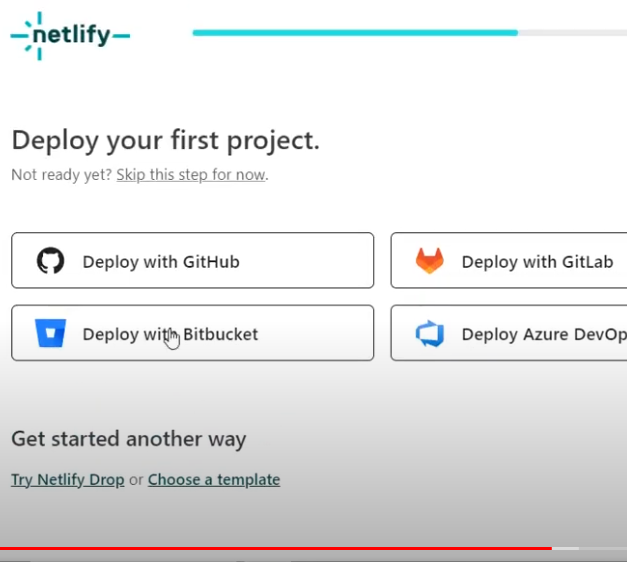
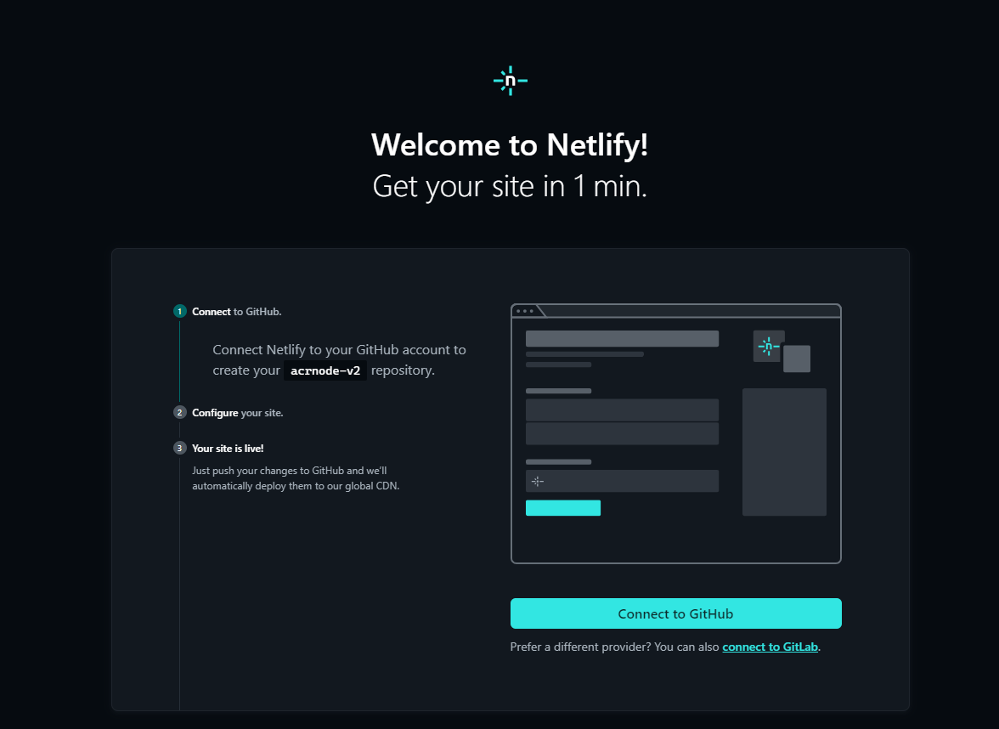

Instructions:
1. Making a Netlify account (optional)
2. Deploying the git
3. Waiting and Watching it work
Step 1: making a Netlify Account
If you already have a netlify account, skip this step.
Go to Netlify sign up and click Sign up with Github.

Sign in to GitHub, if you have not done so yet, and authorize Netlify.

Netlify should now ask you a few more questions:
Make sure you follow the directions below
In the first box, choose "personal" for a free account. Choose I am a hobby developer. Choose my first project will be a personal website so Netlify does not bug you. Then click Set up and continue.


When you get to the page pictured below, you have completed this step. Proceed to step 2.

Step 2: Deploying the git
Click the deploy button:

Click connect to Github


Click connect to Github

The site name can be random, but set the functions path to api, and click Add environment variables on the bottom. Add two variables, username and password. MAKE SURE THAT username AND password ARE SPELLED EXACTLY AS SUCH, LOWERCASE, AND NO SPACES. The username and password are just your rocketbotroyale username/password. This info is only used to sign into Rocketbot for each coin redeem, it is not kept or retained, only stored in Netlify. If you do not do the above, the acr will not work. Check all the settings before clicking deploy. If it does not work, go to The netlify deploy page and try step 3 again.
Click deploy after checking all settings are correct.
Step 4: Watching it work
You should now be at a page about your deploy. Wait until the deploy finishes, it will look something like this. Notice it says your deploy is complete. If not, wait a bit until it does or gives an error. If and error occurs, go to The netlify deploy page and try step 3 again.
Now go to the left side panel, and click logs. Then, under logs click functions.
Click on the function acrv2.
Wait approx. 2 hours, and come back, load the site.

YOu should see something like the above. Click on the part that says "past 2 hours" in the picture above, (it should say real-time on your end) and change it to last 2 hours to see the logs.
The yellow messages are WARN messages, signaling an error or completion. If you see a pair of them together, with one saying Axios Error, then that request did not work. If you see a single one that says Process Completed then it worked that request. There should be one working message every 30 or 35 min.
If you have any questions post them in the discord.